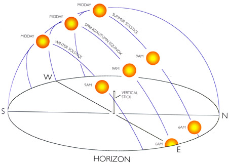
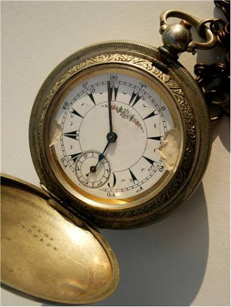
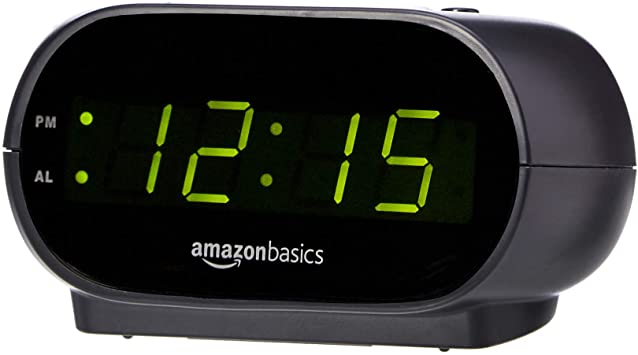

Definitions and Examples
Powered by: Whodunnit
Hypocrisy At Its Best
Its time for me to prove that humanity and its BS needs to come to an end. I not really saying go out and kill nobody, but for the love of
God, how did all these inventions improve anything we did. This page is dedicated to various BS man has done with things that count people's
life. Thats right. You could be minding your own business and some joker comes and tells you that you are lazy or in some cases blesses you
with a compliment, saying "Damn you got it going on!"
This rant continues. Not only do these intrusive events become more frequent, but we have to pay cash money for this crap. Ok. Ok. I will let you see for your self.
This rant continues. Not only do these intrusive events become more frequent, but we have to pay cash money for this crap. Ok. Ok. I will let you see for your self.
Time To Wake Up
This one starts off harmless. About 2000 BC mankind uses the sun in order to make assumptions about what time he needs to get up.
Its the sun. I mean what other hunkering feeling do you need to know to hurry the hell up. Not really good for cooking, or knowing if you
got stood up on a date but I think you get the point. It gets a thumbs up from me. Most importantly its FREE!
|
 |
In the 1600s we started playing with the idea of divided time. Time was an official way to be more productive in ones day.
Europe was the first at such mechanizations. I wish it stayed there. I mean I like having a good Rolex but somethings are just not meant to be.
Ok theoretically in the early 1600s people didn't really count it late within reason because minutes on Earth had not been evented yet. So,
as long as your butt got there before the sun got to high, it was all Cool And The Gang.
|
 |
This is where this crap gets heavey. Not only was time invented, but people started to hoard and take advantage of other with it.
Granted a days wage could be counted with the passage of seconds to hours, but damn! Now the alarm clock dictates my peace and quiet.
Every day the thing goes off as if good Ole Masa was around the corner. Laziness became synonomous with not abiding by the clock. Instead
of walking to get somewhere, people time there pace almost everyday to keep working like a mule. When Im in my care only I need to be concerned
whats in it. Instead of improving our lives, seems like a lot of Bull...you know. Got kids watching, can't be honest. What did we improve exactly.
My great grandfather got up when he was rested. I get up when an artificial being tells me.
|
 |